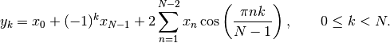
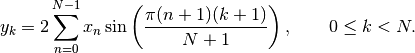
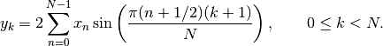
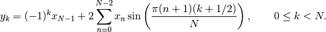

Fourier Transforms (scipy.fftpack)¶
Warning
This is currently a stub page
Contents
Fourier analysis is fundamentally a method for expressing a function as a sum of periodic components, and for recovering the signal from those components. When both the function and its Fourier transform are replaced with discretized counterparts, it is called the discrete Fourier transform (DFT). The DFT has become a mainstay of numerical computing in part because of a very fast algorithm for computing it, called the Fast Fourier Transform (FFT), which was known to Gauss (1805) and was brought to light in its current form by Cooley and Tukey [CT]. Press et al. [NR] provide an accessible introduction to Fourier analysis and its applications.
One dimensional discrete Fourier transforms¶
fft, ifft, rfft, irfft
Two and n dimensional discrete Fourier transforms¶
fft in more than one dimension
Discrete Cosine Transforms¶
Return the Discrete Cosine Transform [Mak] of arbitrary type sequence x.
For a single dimension array x, dct(x, norm='ortho') is equal to MATLAB dct(x).
There are theoretically 8 types of the DCT [WPC], only the first 3 types are implemented in scipy. ‘The’ DCT generally refers to DCT type 2, and ‘the’ Inverse DCT generally refers to DCT type 3.
type I¶
There are several definitions of the DCT-I; we use the following (for norm=None):

Only None is supported as normalization mode for DCT-I. Note also that the DCT-I is only supported for input size > 1
Discrete Sine Transforms¶
Return the Discrete Sine Transform [Mak] of arbitrary type sequence x.
There are theoretically 8 types of the DST for different combinations of even/odd boundary conditions and boundary off sets [WPS], only the first 3 types are implemented in scipy.
type I¶
There are several definitions of the DST-I; we use the following for norm=None. DST-I assumes the input is odd around n=-1 and n=N.

Only None is supported as normalization mode for DST-I. Note also that the DCT-I is only supported for input size > 1. The (unnormalized) DCT-I is its own inverse, up to a factor 2(N+1).
type II¶
There are several definitions of the DST-II; we use the following (for norm=None). DST-II assumes the input is odd around n=-1/2 and even around n=N

type III¶
There are several definitions of the DST-III, we use the following (for norm=None). DST-III assumes the input is odd around n=-1 and even around n=N-1

The (unnormalized) DCT-III is the inverse of the (unnormalized) DCT-II, up to a factor 2N.
References¶
| [CT] | Cooley, James W., and John W. Tukey, 1965, “An algorithm for the machine calculation of complex Fourier series,” Math. Comput. 19: 297-301. |
| [NR] | Press, W., Teukolsky, S., Vetterline, W.T., and Flannery, B.P., 2007, Numerical Recipes: The Art of Scientific Computing, ch. 12-13. Cambridge Univ. Press, Cambridge, UK. |
| [Mak] | (1, 2) J. Makhoul, 1980, ‘A Fast Cosine Transform in One and Two Dimensions’, IEEE Transactions on acoustics, speech and signal processing vol. 28(1), pp. 27-34, http://dx.doi.org/10.1109/TASSP.1980.1163351 |
| [WPC] | http://en.wikipedia.org/wiki/Discrete_cosine_transform |
| [WPS] | http://en.wikipedia.org/wiki/Discrete_sine_transform |
FFT convolution¶
scipy.fftpack.convolve performs a convolution of two one-dimensional arrays in frequency domain.
Cache Destruction¶
To accelerate repeat transforms on arrays of the same shape and dtype, scipy.fftpack keeps a cache of the prime factorization of length of the array and pre-computed trigonometric functions. These caches can be destroyed by calling the appropriate function in scipy.fftpack._fftpack. dst(type=1) and idst(type=1) share a cache (*dst1_cache). As do dst(type=2), dst(type=3), idst(type=3), and idst(type=3) (*dst2_cache).

Table Of Contents
Previous topic
Interpolation (scipy.interpolate)